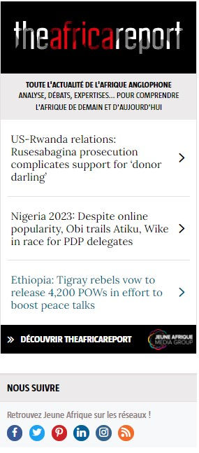

Avec « Marianne face aux faussaires », l’écrivaine dénonce à la fois le racisme et les formes radicales d’antiracisme dans une langue acérée.
En 2017, en pleine période électorale, Fatou Diome publiait Marianne porte plainte !, un poème en prose qui interrogeait le concept d’identité nationale, son omniprésence dans le débat politique et les excès de ses défenseurs. Cinq ans plus tard, dans un contexte similaire, l’écrivaine franco-sénégalaise de 54 ans revient avec Marianne face aux faussaires, un essai incisif et inquiet sur la défense des valeurs républicaines, dans une France prise en tenailles entre identitaires xénophobes brandissant la menace du « grand remplacement » et militants antiracistes prisonniers d’un passé colonial qui dévoient la lutte qu’ils prétendent mener. Une France qui doit supporter leurs discours amers, tristes et déclinistes.
À LIRE Fatou Diome : « Les nôtres sont nécrosés dans leurs tiroirs identitaires »
Dans une langue acérée, l’autrice, entre autres, du Ventre de l’Atlantique et de Celles qui attendent, qui dit écrire pour réparer son chaos intérieur, s’interdit de regarder sans broncher les loups dépecer la Constitution et la transformer. Forte de sa double identité, elle tente de dessiner une autre France, la vraie, qui véhicule des valeurs humanistes et lui donne envie de se sentir pleinement française et sénégalaise.
COMME DISAIT MON GRAND-PÈRE, L’INERTIE HÂTE LE NAUFRAGE, MÊME À TERRE
Jeune Afrique : Qu’est-ce qui justifie ce nouveau rendez-vous avec Marianne ? Votre coup de gueule de 2017 contre la cristallisation du débat autour de l’identité, l’islamophobie et l’instrumentalisation de la laïcité a-t-il échoué à apaiser le climat politique ?
Fatou Diome : Il y a cinq ans, l’extrême droite, déjà fort inquiétante, n’avait encore qu’une branche. Aujourd’hui, elle s’est ramifiée, et sa progression dans les urnes apparaît absolument effrayante. Marine Le Pen s’est « normalisée » aux yeux de nombreux Français alors même que ses thèses n’ont pas changé. Je pensais naïvement que la période agitée qui avait motivé la rédaction de Marianne porte plainte ! disparaîtrait. La situation s’est plutôt envenimée, un discours violent et identitaire décomplexé a envahi l’espace médiatique. Je veux marquer ma désapprobation. Comme disait mon grand-père, l’inertie hâte le naufrage, même à terre. Alors, je fais ce que je peux pour tirer la sonnette d’alarme.
Vous dressez le portrait des faussaires qui, selon vous, menacent la cohésion de la République. Qui sont-ils ?
Ils appartiennent à deux camps opposés, mais s’entretiennent et s’alimentent mutuellement. D’un côté, les loups de l’extrême droite qui hurlent fort leur détestation de l’altérité. Ils désignent sans vergogne des boucs émissaires – forcément Noirs ou Arabes – qu’ils tiennent pour responsables de tous les maux, et n’aspirent qu’à les voir chassés hors du territoire. Face à ces loups, les faux bergers. Piètres activistes, ils détournent le militantisme des causes honorables qu’il défend pour l’installer dans l’invective, la haine et l’agressivité, lesquelles sont dirigées non seulement contre les loups, mais aussi contre toutes les personnes qui ne partagent pas leurs points de vue ou leurs méthodes – et qu’ils considèrent comme des traîtres à la cause noire. Ces faux bergers s’accommodent tellement de l’idée d’être des victimes désignées qu’ils ne peuvent plus se départir de leur posture victimaire.
À LIRE [Tribune] Derrière la polémique sur l’« islamo-gauchisme », une volonté de bâillonner les historiens
Comment l’obsession identitaire s’est-elle progressivement installée en France ?
Depuis mon arrivée en France, en 1994, le champ sémantique du discours politique n’a cessé d’évoluer. On est passé de la « fracture sociale » de Jacques Chirac, lors de la campagne présidentielle de 1995, à « l’identité nationale » de Nicolas Sarkozy, en 2007 et en 2017, puis au « grand remplacement » en 2022. Au fil des ans, à cause du terrorisme, on a stigmatisé tous les musulmans et évoqué la déchéance de nationalité. Et, parce que quelques Africains ne parvenaient pas à s’intégrer – souvent faute d’emploi ou de logement –, on a dénié aux autres leur nationalité française. Comment voulez-vous que celui à qui on répète à longueur de temps qu’il est un étranger développe un réel sentiment d’appartenance à la nation ?
Dès les premières pages de votre livre, on découvre quelques-unes des lettres anonymes que vous avez reçues après la parution de Marianne porte plainte ! Ce sont des injonctions au silence…
Avec ces nombreuses lettres, j’aurais pu faire un recueil d’âneries. Les unes intiment à la « guenon » que je suis l’ordre d’arrêter de s’occuper des affaires de la France, les autres la menacent d’un retour au Sénégal les pieds devant. Au début, je m’en débarrassais systématiquement. L’une de mes attachées de presse m’a conseillé de les conserver parce qu’elles pourraient servir un jour en cas d’enquête. Longtemps aussi, je me suis abstenue d’en parler pour ne pas faire de publicité à leurs auteurs – c’est précisément ce qu’ils cherchent – ou leur donner l’impression que je suis terrorisée.
L’êtes-vous ?
Pas du tout. Ça m’est égal de mourir aujourd’hui ou demain. Ne cédant pas à la peur, je peux publier ce que je veux. Écrire, c’est ma manière d’être au monde. Quel sens aurait ma vie si je ne pouvais plus faire état de ce qui me tracasse dans mes livres ? Si je cessais d’être le porte-voix des milliers de personnes qui partagent mes révoltes mais qui, elles, n’ont ni la capacité ni l’opportunité de les exprimer publiquement ? Continuer à écrire malgré les menaces participe d’un devoir citoyen.
L’INTELLIGENCE ET LE BON SENS SERAIENT-ILS DES PLANTES RARES QUI NE POUSSENT QUE CHEZ LES BLANCS ?
Cette injonction à vous taire vient-elle des deux côtés ?
Ceux qui m’accusent d’être « une putain de Daech » et me somment de « retourner bouffer des bananes chez [moi] » sont visiblement des Caucasiens. En revanche, ceux qui me traitent de « vendue » ou de « négresse de service » sont forcément des Africains ou, en tout cas, des Noirs. C’est paradoxal : les mêmes m’applaudissent quand je critique les contrats léonins avec l’Europe. Je deviens alors leur sœur préférée, presque leur nouveau Sankara.
Quand je m’insurge contre la polygamie, qui n’est pas adaptée au mode de vie citadin – en appartement, dans la promiscuité -, qui aggrave la pauvreté et favorise les maladies sexuellement transmissibles, on crie à la pensée blanche. Qu’est-ce que cela signifie ? L’intelligence et le bon sens seraient-ils des plantes rares qui ne poussent que chez les Blancs ? Si vous êtes Noir, dès que vous remettez en cause une pratique dans votre communauté, vous êtes accusé de valider le discours occidental. On se respecte donc si peu pour s’estimer incapable de mener un raisonnement scientifique, dialectique, équilibré et progressiste ? C’est une pensée victimaire qui intègre la médiocrité comme faisant partie de nous. C’est ce que je combats : j’ai été élevée pour dépasser les choses qui m’écrasent. Quand je m’exprime ainsi, on m’accuse de ne pas avoir de compassion pour ceux qui échouent.
En avez-vous ?
J’ai été femme de ménage pendant sept ans en France. La galère, je sais à quoi elle ressemble. Je sais ce que c’est que d’envoyer 170 CV et de ne recevoir que deux réponses, l’une négative et l’autre proposant deux heures de travail par semaine. Ces déboires ne m’ont pas empêchée de regarder les étoiles et de me dire que j’en voulais une. C’est détruire une jeunesse entière que de lui faire croire qu’à cause de la colonisation et de l’esclavage elle est foutue pour toujours, parce qu’on l’aurait écrasée et appauvrie pour toujours. Il y a des pays européens plus pauvres que les nôtres. On n’hésite pas à y immigrer parce qu’on estime que tout ce qui est hors d’Afrique est toujours bon à prendre. Et on se retrouve dans d’obscurs bleds en train de crever de faim. À un moment donné, il faut dire : « Ouvrez les yeux ! » La pauvreté n’a pas de nationalité et elle ne demande pas de visa. C’est pareil pour la détresse humaine.
À LIRE France : qui sont les décoloniaux, ces nouveaux militants antiracistes qui volent de leurs propres ailes ?
Vous revendiquez votre liberté de penser. Est-ce cela qui vous fait dire que votre peau n’est pas une camisole de force ?
Nul ne peut m’y enfermer. Serions-nous les seuls, nous, artistes africains, à n’avoir pas la liberté d’écrire sur ce que nous voulons ? Cette espèce d’injonction à parler et à se battre pour l’Afrique est assez révoltante. Je ne suis pas un soldat engagé dans une armée. Je fais ce que je veux : ma conscience, ma vie, mon histoire familiale et mon parcours m’appartiennent. Je peux être solidaire de mon peuple et du pays dans lequel je vis, comme n’importe quel être humain qui se sent une conscience politique, mais personne n’a le droit de me prescrire mes luttes ou mes engagements. Sommes-nous tous obligés d’aborder les mêmes thèmes ? On dirait que nous, Africains, avons décidé que, parler des difficultés des Noirs, maintenant, hier et avant-hier, est notre seule raison de créer. Je le déplore : c’est une manière de réduire le champ des possibles pour les artistes du continent.
Ressasser les mêmes sujets est finalement une forme de lâcheté, dites-vous.
C’est une manière de se protéger en restant enfermé dans le cocon de l’esclavage et de la colonisation, deux thèmes qui font toujours consensus. Ils rallient le plus grand nombre, qui pleurniche, critique, sans être capable de formuler la moindre solution. Je préfère être force de proposition.
TU ES NOIR ? ALORS, TU AS UNE RÉVOLTE À MENER, UNE AMERTUME À GÉRER. JE M’Y REFUSE
Cette camisole de force peut aussi être imposée par les Blancs.
Oui. C’est de l’assignation identitaire. L’accepter, c’est faire le jeu des racistes et des sectaires. Elle consiste à nier l’aptitude de l’autre à se définir. Un Noir n’en vaut pas un autre ; chacun a sa propre histoire. De la même manière que la Shoah n’a pas touché toutes les familles juives, l’esclavage et la colonisation n’ont pas concerné tous les Noirs au même degré. Les uns ont très mal vécu la colonisation, les autres, retirés dans des zones de campagne et sans contact avec les gouverneurs de colonie, l’ont à peine expérimentée. Cette vérité, beaucoup ne veulent pas l’entendre. Tu es Noir ? Alors, tu as une révolte à mener, une amertume à gérer. Je m’y refuse car la vie humaine est trop courte. Je préfère combattre les fléaux qui causent de réels soucis, lutter pour le développement et pour la dignité de l’Afrique.
Ce qui vous apparaît comme de l’assignation identitaire est vu par d’autres comme une invitation à participer au combat.
Les Africains sont enclins à utiliser un « nous » globalisant. Généralement, j’y adhère, sauf quand ce « nous » devient dictatorial, quand l’outrage répond à l’outrage, conduisant parfois à la castagne. Comme a dit Martin Luther King : « Notre soif de liberté ne doit pas nous pousser à boire à la coupe de l’amertume et de la haine. » Lorsqu’ils combattent, certains des nôtres oublient qu’ils ont en face des gens qui les provoquent pour faire ressortir leurs mauvais côtés et mieux accréditer une image de nous qu’ils tentent d’imposer au public.
CONSTITUER DES MEUTES POUR ALLER RENVERSER DES STATUES N’A RIEN DE GLORIEUX, C’EST PRIMAIRE ET PRIMITIF
À quel exemple de castagne pensez-vous ?
Déboulonner les statues. S’il faut absolument en déboulonner, faisons-le à Dakar, Abidjan ou Cotonou. En tant que pays indépendants, nous sommes libres de changer les noms de nos rues et monuments. Une statue représentant Colbert a beau nous irriter en France, nous n’avons pas à nous en prendre à elle parce qu’elle est érigée dans son pays. Si j’étais députée française, je pourrais faire valoir que sa présence est dérangeante pour l’originaire d’Afrique que je suis. Ça peut se défendre… Pourquoi ne pas organiser un débat pour tenter de rallier la société à cette cause en lui expliquant que certains symboles peuvent heurter les citoyens ayant une histoire douloureuse avec l’esclavage ? Cela pourrait se traduire par le vote d’une loi. Cette démarche pacifique me semble plus constructive. Constituer des meutes pour aller renverser des statues n’a rien de glorieux. C’est primaire, c’est primitif.
D’ailleurs, les déboulonner, n’est-ce pas discutable ?
En effet. Comme les autodafés pour les livres. Faut-il passer un coup de gomme sur les symboles de l’Histoire pour se sentir en paix en faisant comme si cette histoire n’avait jamais existé ? Si ces statues demeurent, elles permettent de mieux instruire les jeunes Français sur le rôle peu glorieux que leur pays a pu jouer dans l’Histoire. J’attends des jeunes générations africaines qu’elles maîtrisent leur passé, le comprennent, le contextualisent pour avancer fièrement, librement, dignement.
À LIRE Le féminisme africain n’a pas attendu l’Occident
Le pire tort qu’on puisse leur causer, c’est de leur faire croire que la colonisation serait responsable de leur sort. Elles ne l’ont pas connue : tout est à leur portée, dès lors qu’elles acceptent de relever des défis. Évidemment, la lutte contre le racisme doit se poursuivre. Elle sera, je l’espère, plus facile pour les nouvelles générations, grâce notamment aux compétences qui sont les leurs. L’éducation permet de lever les barrières. C’est cette pensée-là que je souhaite installer. Elle est plus libératrice et, dans une certaine mesure, plus dangereuse que toutes les colères victimaires qu’on entend et qui ne servent à rien. Quand vous culpabilisez une personne, elle se braque, ne vous écoute plus. Quand vous argumentez, elle vous redoute davantage. Nul ne parvient à dominer celui qui argumente et agit de manière déterminée et résolue.
Racisme : « Il ne suffit pas de se déclarer universaliste »
JAÉgalité, fraternité, racisme : la France, République des paradoxes »
JADeux ouvrages indispensables pour décortiquer le racisme
Littérature, gastronomie, mode, musique, arts plastiques, spectacle vivant... Les cultures bouillonnent ! Chaque jour, de nouveaux talents émergent. Nous sommes attentifs aux évolutions culturelles et sociétales qui ont la force d'unir les Africains ou de susciter le débat. Nous captons les tendances pour vous partager les changements qui s'opèrent sur le continent.
La culture d'aujourd'hui participe à la société de demain.
Recevez chaque jour par email,
les actus Jeune Afrique à ne pas manquer !


Axée sur le soutien aux économies qui marchent, la nouvelle stratégie de Berne entend aller plus loin que les impératifs d’allègement de la pauvreté. Le signe d’une prise de conscience des enjeux africains contemporains.
